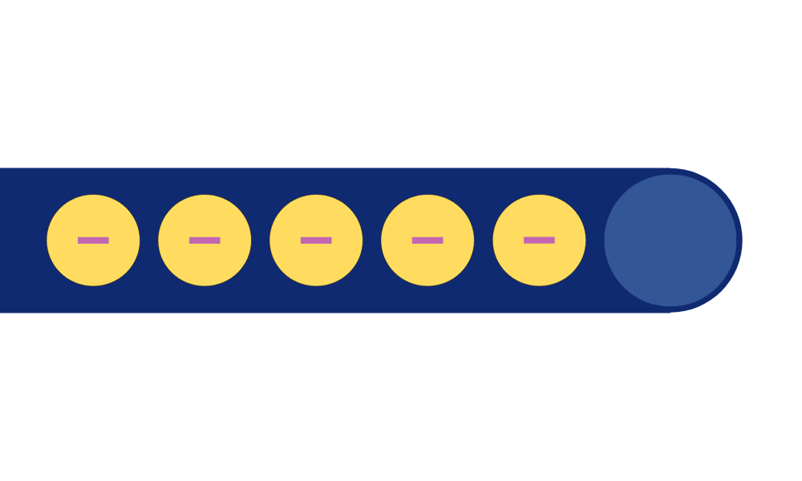

MODULE 2
LES BASES DE L'ÉLECTRICITÉ
Pour comprendre l’électricité, il faut tout d’abord commencer par l’atome.
Un atome est la plus petite unité de matière. Il est composé de trois principales particules : les protons, les neutrons et les électrons. Les protons sont des particules qui ont une charge positive et qui se situent dans le noyau de l’atome. Les neutrons sont des particules qui n’ont pas de charge, on dit qu’ils sont électriquement neutres et ils se situent également dans le noyau de l’atome.
Une charge électrique est un électron. Les électrons sont des particules de charge négative qui gravitent autour du noyau à des distances spécifiques, appelées niveaux d’énergie.
La combinaison du nombre de protons et de neutrons dans le noyau détermine le type d’atome, c’est-à-dire l’élément auquel il correspond, tandis que le nombre d’électrons et leur arrangement autour du noyau déterminent ses propriétés chimiques. Généralement au sein d’un atome, on retrouve le même nombre de protons et d’électrons, ce qui implique que l’atome est électriquement neutre : sa charge est égale à zéro.
Les atomes peuvent se combiner pour former des molécules, et ces molécules forment la matière que nous voyons et touchons au quotidien. Les atomes sont les briques de base de toute la matière de l’univers.
Le champ électrique est une propriété de l'espace autour d'une charge électrique qui exerce une force sur les autres charges électriques. Il est représenté par des lignes de champ électrique qui indiquent la direction dans laquelle une charge positive se déplacerait si elle était placée dans ce champ.
Le champ électrique E en un point est défini comme la force F que subirait une charge électrique q de test placée en ce point, divisée par la valeur de cette charge de test :
L’unité du champ électrique dans le système international est le volt par mètre (V/m).
Note :
Une force est une interaction physique qui peut modifier l'état de mouvement ou de repos d'un objet. Elle est caractérisée par sa magnitude, sa direction et son point d'application. Les forces peuvent être dues à des interactions gravitationnelles, électromagnétiques, ou résulter de contacts physiques entre objets.
Le potentiel électrique, également appelé simplement le potentiel, est une mesure de l'énergie électrique potentielle par unité de charge électrique en un point donné dans un champ électrique. Il est symbolisé par la lettre "V" et mesuré en volts (V), tout comme la tension.
La tension, symbolisée par la lettre "V" et mesurée en volts (V), est une grandeur électrique qui représente la différence de potentiel électrique entre deux points dans un circuit électrique. Elle indique la quantité d'énergie potentielle électrique par unité de charge électrique (c'est-à-dire les électrons) entre ces deux points.
En d'autres termes, la tension mesure la force qui pousse les électrons à se déplacer dans un circuit. Plus la tension est élevée, plus la force qui pousse les électrons est grande, et donc plus l'intensité du courant électrique est élevée. La tension est essentielle pour créer un flux de courant électrique dans un circuit. Elle peut être comparée à la pression dans un tuyau d'eau : une tension plus élevée correspond à une pression plus élevée, ce qui fait circuler l'eau (ou les électrons) plus rapidement.
Lorsqu'un objet chargé est placé dans un champ électrique, il ressent une force électrique due à la différence de potentiel électrique entre les points de son trajet. L'objet se déplacera vers les zones de plus bas potentiel électrique, car il est attiré par l'énergie potentielle électrique plus faible.
La tension est ce qui pousse les électrons dans un circuit. Sans tension, les électrons (libres) se déplacent au hasard dans n'importe quelle direction.
L’énergie potentielle électrique est une forme d'énergie liée à la disposition des charges électriques et à leur interaction mutuelle. Elle augmente avec la quantité de charges et diminue avec la distance entre elles.
La formule de l'énergie potentielle électrique est donnée par :
avec q la charge électrique en Coulombs (C), Epe l’énergie potentielle électrique en Joules (J) et V la tension électrique en volts (V).
Le courant électrique est le déplacement ordonné de charges électriques, généralement des électrons, à travers un conducteur. Il s'agit du flux de charges électriques dans un circuit électrique, créant ainsi un mouvement continu d'électricité. Le courant électrique est l'une des grandeurs électriques les plus fondamentales et est mesuré en ampères (A) dans le système international d'unités.

La convention pour la direction du courant électrique est du pôle positif au pôle négatif. Cela signifie que les électrons, qui ont une charge négative, se déplacent du pôle négatif au pôle positif. Cependant, dans de nombreux schémas de circuits, la flèche du courant est dessinée dans le sens inverse, du pôle positif au pôle négatif, ce qui est une convention historique.
La différence entre le flux conventionnel et le flux réel d'électrons concerne la direction du courant électrique et la façon dont nous la représentons.
Flux conventionnel :
Le flux conventionnel est une convention historique largement utilisée dans l'analyse des circuits électriques. Selon cette convention, le courant électrique est considéré comme un mouvement de charges positives, allant du pôle positif au pôle négatif de la source d'alimentation ou à travers un circuit. Cette convention a été établie bien avant que l'on ne comprenne pleinement le mouvement des électrons.
En d'autres termes, dans le flux conventionnel, on imagine que les charges positives se déplacent dans la direction du courant, même si en réalité, ce sont les électrons (qui sont négatifs) qui se déplacent du pôle négatif au pôle positif. Cette convention a été adoptée pour simplifier la compréhension et les calculs des circuits électriques, car elle est plus intuitive et évite la confusion.
Flux réel d'électrons :
Le flux réel d'électrons, en revanche, est la description du mouvement des électrons, qui sont négatifs et qui se déplacent réellement à travers un circuit d'un pôle négatif à un pôle positif. C'est la réalité du déplacement des particules chargées dans un fil conducteur.
Dans un circuit électrique, une source d'énergie, comme une pile ou une génératrice, fournit l'énergie nécessaire pour pousser les charges électriques à travers le circuit. Cette source crée une différence de potentiel électrique (tension) qui provoque le déplacement des charges.
Le courant électrique se déplace à travers des matériaux conducteurs tels que les métaux (cuivre, aluminium) qui permettent aux électrons de se déplacer librement. Les matériaux isolants, en revanche, ne permettent pas un déplacement libre des charges.
Les conducteurs et les isolants sont deux types de matériaux qui réagissent de manière très différente à la conduction de l'électricité en raison de leur capacité à permettre ou à entraver le mouvement des charges électriques.
Les conducteurs sont des matériaux qui permettent le mouvement facile des charges électriques, généralement des électrons.
Cela signifie que les électrons peuvent se déplacer librement à travers le matériau en réponse à une différence de potentiel électrique (tension) appliquée. Les conducteurs ont des électrons libres en abondance, qui ne sont pas fortement liés aux atomes du matériau.
Ces électrons libres peuvent se déplacer et constituer un courant électrique lorsqu'une tension est appliquée.
Les métaux tels que le cuivre, l'aluminium, l'argent et l'or sont d'excellents conducteurs électriques. Ils sont largement utilisés dans les fils électriques et les composants électriques en raison de leur capacité à transporter l'électricité.
Les isolants sont des matériaux qui ne permettent pas le mouvement facile des charges électriques. Ils sont très résistants à la conduction électrique, ce qui signifie que les électrons ne peuvent pas se déplacer librement à travers le matériau en réponse à une tension.
Les électrons dans les isolants sont fortement liés aux atomes du matériau et ne se déplacent que très difficilement en réponse à une tension électrique.
Cela signifie que les isolants ne soutiennent pas la formation d'un courant électrique significatif. Les isolants comprennent des matériaux tels que le plastique, le verre, le caoutchouc, le bois et la céramique.
Ils sont couramment utilisés pour isoler et protéger les fils électriques, car ils empêchent les fuites de courant électrique non désirées.